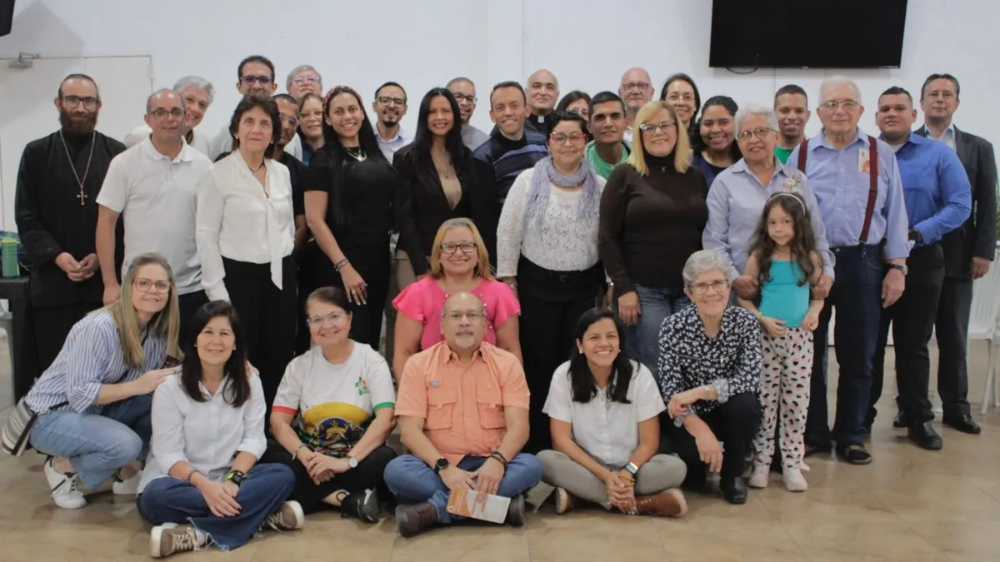

RealizadoRealizadoJornada · Laicos
Jornada de formación y diálogo ecuménico, «Caminamos juntos hacia la unidad en la diversidad»
Jornada de formación y diálogo con representantes de distintas iglesias cristianas, bajo el lema «Caminamos juntos hacia la unidad en la diversidad».

Datos del evento
- Fecha
- Antes del 2 de febrero de 2026
- Modalidad y lugar
- Presencial · Parroquia Coromoto del Paraíso e Iglesia San Antonio Abad (Iglesia Ortodoxa Antioquena), Caracas
- Organiza
- Equipo de laicos acompañado por el Centro de Laicos, Familia y Juventud
- Estado
- Realizado
Cómo fue
Un equipo de laicos, acompañado por el Centro, con el Movimiento de los Focolares y el CEP de los jesuitas, organizó la jornada en la Parroquia Coromoto del Paraíso y en la Iglesia San Antonio Abad, de la Iglesia Ortodoxa Antioquena, en Caracas.
La primera parte fue de formación: historia del ecumenismo y «Teología sinfónica». La segunda, de testimonios de representantes de las iglesias ortodoxa, presbiteriana, reformada, anglicana y otras.
Qué se hizo
- Estudiaron la historia del ecumenismo y la «Teología sinfónica».
- Escucharon los testimonios de representantes de las iglesias ortodoxa, presbiteriana, reformada, anglicana y otras.
Quién participó
- Laicos, una pastora y un sacerdote de otras iglesias cristianas, junto a representantes de las iglesias ortodoxa, presbiteriana, reformada, anglicana y otras.